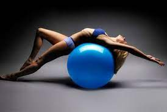
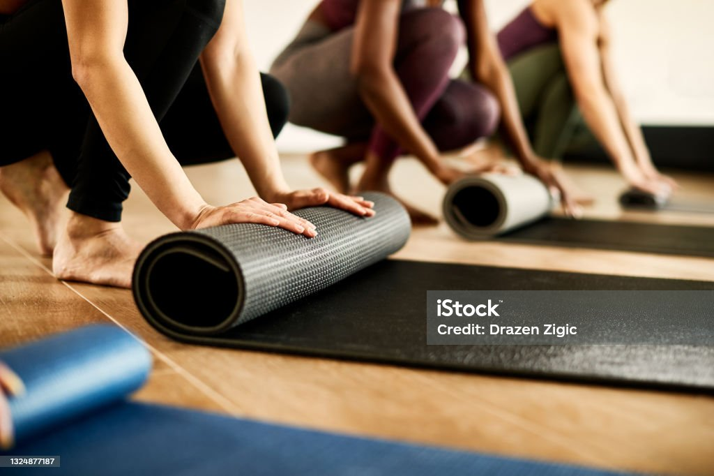

Піла́тес (нім. Pilates) — комплекс фізичних вправ, винайдений на початку XX століття німецьким й американським тренером Йозефом Пілатесом, метою якого є розвиток гнучкості всіх м'язів тіла. Система є поєднанням йоги, балету та ізометричних вправ. Загалом пілатес сприяє зміцненню м'язів, фіксує нормальне положення тіла (постави, внутрішніх органів), зміцнює м'язи спини, преса та таза, покращує гнучкість тіла, знижує рівень стресу та поліпшує загальний стан здоров'я спортсменів. Особливо популярним пілатес є у Німеччині, Великій Британії та США.
 Система пілатесу містить в собі вправи для всіх частин тіла. Ця система вправ була розроблена на початку XX століття, але отримала найбільше визнання на початку XXI століття. Наразі пілатесом займаються понад 10 мільйонів людей по всьому світу. Метод Пілатеса робить наголос на взаємодію розуму та тіла (англ. Body & Mind) при виконанні вправ. Виконання вправ пілатесу супроводжується концентрацією на дихальному ритмі, правильності виконання вправи та усвідомленням дії кожної вправи на ту чи іншу групу м'язів. Пілатес зміцнює м'язи преса, покращує баланс, покращує координацію і знижує стрес. Намагаючись розв'язати проблеми зі здоров'ям, Джозеф Пілатес відкрив унікальний тренувальний метод, відповідний будь-якій людині. Техніка виконання вправ пілатесу дуже м’яка, але функціональна і дуже ефективна. Вона зовсім не схожа на йогу, як багато хто думає. Це дуже прості вправи, спрямовані на поліпшення гнучкості, витривалості та зміцнення м'язового каркаса. Якщо ваші поперекові м'язи не звикли до тренувань і занадто "жорсткі", то м'язи живота пропрацювати буде неможливо. В цьому випадку під час виконання пілатес-вправи для преса[2] буде покладено занадто велике навантаження на поперек, і ви зіткнетеся з болем в спині.
Переваги вправ пілатесу (за твердженням його адептів)
- розвиває кожен аспект фізичної форми: силу, витривалість, гнучкість, спритність, підвищує швидкість;
- покращує усвідомлення фізичної форми тіла;
- контроль над тілом;
- вчить правильній активації м'язів, коригує поставу;
- покращує роботу внутрішніх органів;
- підсилює обмінні процеси в організмі
Основні принципи пілатесу
Дихання функція організму, вироблена довільно і несвідомо. Метод Пілатеса використовує «глибоке дихання». Глибоке дихання є важливою частиною вправ пілатес. Таке дихання ініціюється в ділянці живота. Більшість людей при вдиху розширюють верхню частину грудної клітки. Такий вид дихання називають грудним. Дихання в пілатес не розширює передню частину грудної клітки і не надуває живіт. Дихання пілатес концентрується на заповненні нижньої частини легенів. При такому диханні виникає відчуття, що ви роздмухуєте спину. Ця форма глибокого дихання дозволяє нахилятися і рухатися, не обмежуючи об'єм вдихуваного повітря. Повітря, що надходить, насичує киснем задіяні у вправах м'язи.
Точність і контроль У методиці Пілатеса існує певна послідовність, або структура вправ, що послідовно зачіпає всі групи м'язів. Рухи неспішні і плавні. Основна вимога — рухи повинні бути точними. Необхідна точність походить від постійного фізичного контролю тіла. Подібно до практики тайцзіцюань, руху не різкі, а плавні. Рухи спрямовані на витягування або зміцнення м'язів, чому сприяє глибоке дихання в кожній позі. Як і в йозі, комбінація дихання, витягування і додатка сили справляють заспокійливий ефект. Але на відміну від йоги, самі заняття динамічніші і засновані на повторенні. Спочатку Джозеф Пілатес назвав свій метод Contrology, маючи на увазі практику методу контролю стану м'язів уявним зусиллям.Концентрація включає в себе комбінування фізичних і розумових процесів. Найчастіше існує розмежування між тілом і свідомістю. Завдання пілатесу — забезпечити їх взаємодію і спільну роботу, тобто встановити зв'язок між тілом і свідомістю (пілатес — одна з фітнес програм «Body & Mind»). Якість вправ значно зростає, якщо навчитися концентруватися на певних зонах тіла. Під час виконання руху необхідно сконцентрувати усю увагу на м'язах, які задіяні в даній вправі.
Плавність Грація при виконанні цього курсу вправ народжується тоді, коли один рух плавно з'єднується з наступним. Кожен рух або вправа має певну точку початку і завершення. Вашим завданням є зробити ці точки невиразними в єдиній цілісності заняття. Кожна вправа веде до наступного. Рух не припиняється, і кінець однієї вправи є продовженням наступної.

Види пілатесу
Серед існуючих наразі різновидів системи Пілатес можна виділити такі програми, що відрізняються за низкою ознак. Pilates Matwork — це пілатес без будь-якого обладнання. З нього варто починати знайомство з методом Джорджа Пілатеса з підручних засобів для нього потрібен лише нековзний килимок. Pilates Matwork для початківців є основним, базовим курсом, у якому рухи виконуються в положенні стоячи, сидячи, лежачи, в упорі стоячи на колінах. Система Pilates Matwork становить серію вправ, які спрямовані на стабілізацію і зміцнення м'язів спини і черевного пресу, зняття больового синдрому в різних відділах хребта, поліпшення постави, ознайомлення з унікальною методикою дихання Пілатеса, що не завжди збігається з традиційною системою («видих на зусилля»). Містить варіації і модифікації базових вправ пілатесу з урахуванням фізіологічних особливостей тих, хто займається. У системі пілатес існує два рівня складності: початковий і просунутий, які підкоряються єдиним правилам, від точного виконання яких залежить досягнення бажаного результату. Початковий рівень пілатеса спрямований на формування в організмі установки на здоров'я і закріплення досягнутого результату. Особливу увагу саме на цьому етапі приділяють так званому центру сили, до якого входять зони хребта, спини, м'язів живота, ніг, стегон і сідниць. Метою цього етапу є формування правильного дихання, що зачіпає при глибокому вдиху нижні відділи легень. А тому більшість вправ пов'язана з тренуванням преса.
Наверх